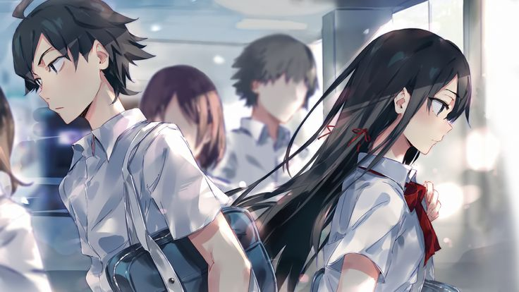

My Teen Romantic Comedy SNAFU (Oregairu) is a character-driven romantic drama about Hachiman Hikigaya, a cynical and isolated high school student who believes genuine relationships are mostly an illusion. After being forced to join the Service Club, he meets Yukino Yukinoshita and Yui Yuigahama, two girls with completely different ways of seeing people and relationships.
As they help others with their problems, the three slowly confront their own loneliness, insecurities, and conflicting feelings. Beneath its comedy and romance, Oregairu explores loneliness, human nature, friendship, and the difficult search for something genuine.